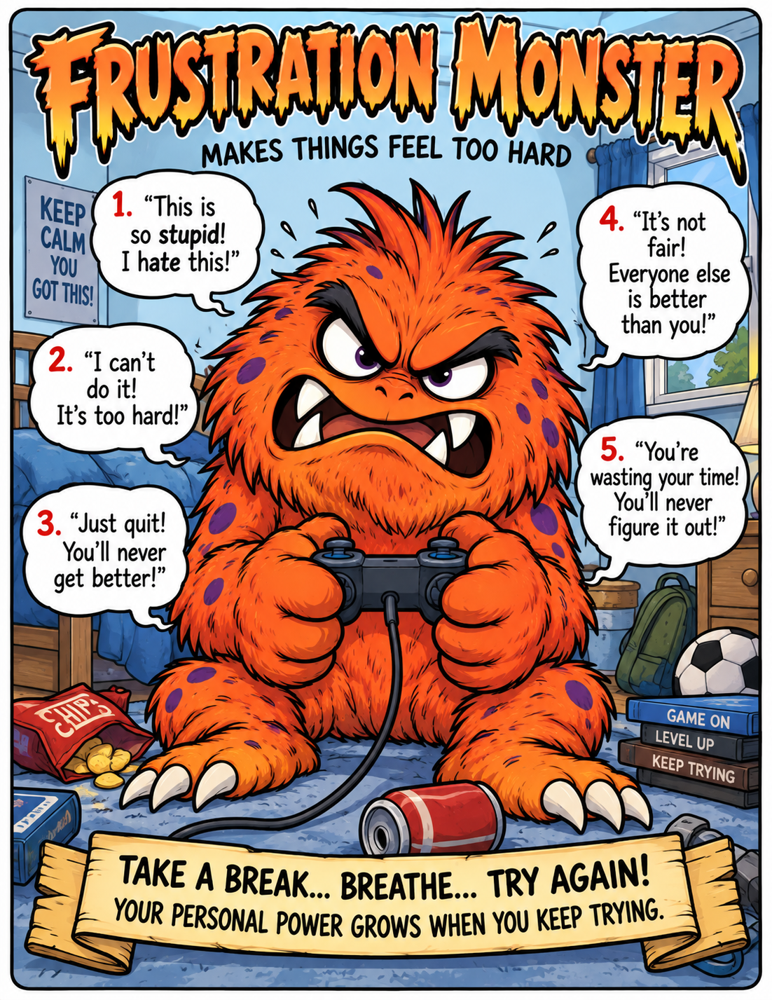
Download Frustration poster (PDF)When frustration says, “Give up!”
Practice patience and persistence: pause, ask for help, and try one small step.
Trouble Monsters are imaginary characters that give a name to familiar challenges such as anger, fear, doubt, frustration, and isolation. Personal Power Pals represent helpful skills we can practice—with support from others.


Download Frustration poster (PDF)Practice patience and persistence: pause, ask for help, and try one small step.
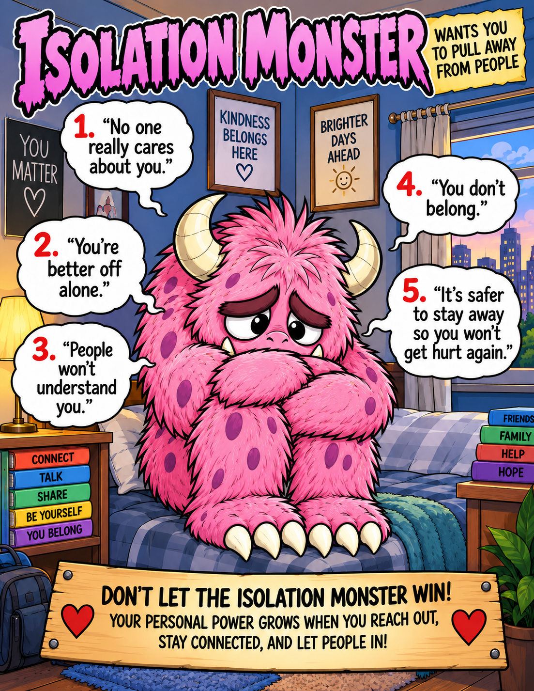
Download Isolation poster (PDF)Practice connection: reach out to someone you trust or invite someone to join you.
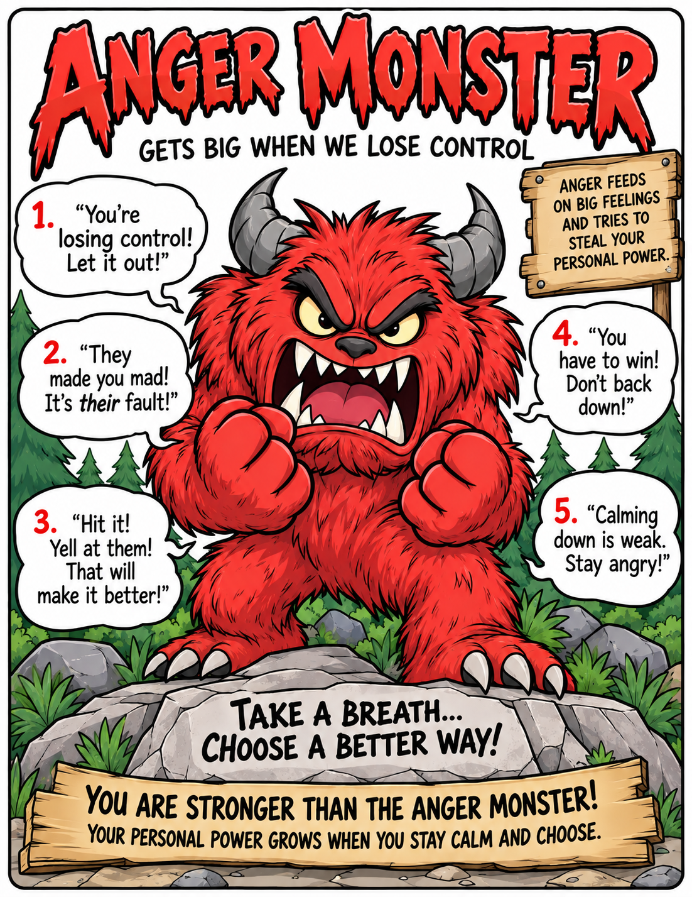
Download Anger poster (PDF)Practice calming down: take a breath, pause, and choose a safe way to express what you feel.
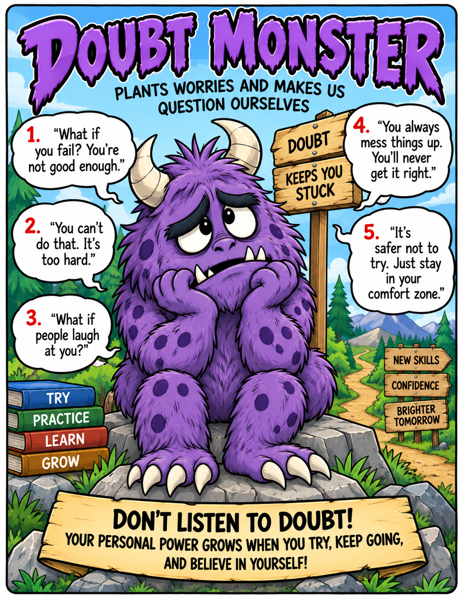
Download Doubt poster (PDF)Practice courage: you can try something difficult while still feeling unsure.
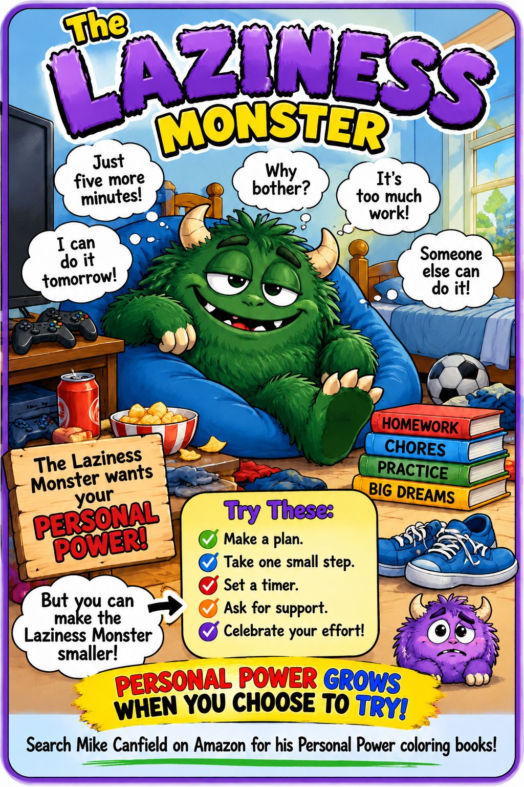
Download Laziness poster (PDF) ▶ Watch Laziness videoMake a plan, take one small step, and ask for support. Celebrate your effort as your Personal Power grows.
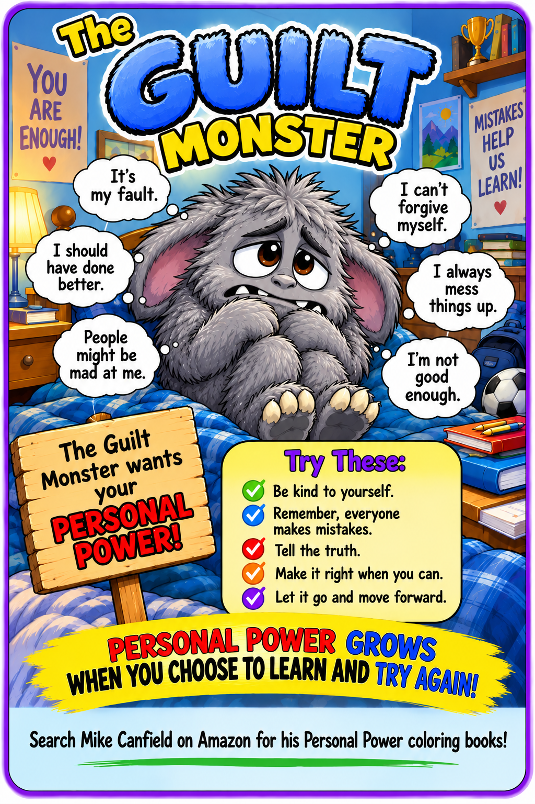
Download Guilt poster (PDF)Be kind to yourself. Everyone makes mistakes: tell the truth, make it right when you can, and choose to learn and try again.
 Download Shame poster (PDF)
▶ Watch Shame video
Download Shame poster (PDF)
▶ Watch Shame video
You are worthy just as you are. Practice self-kindness, share your feelings with someone you trust, and focus on what you can do now.
 Download Worry poster (PDF)
▶ Watch Worry video
Download Worry poster (PDF)
▶ Watch Worry video
Name what you’re feeling, take a breath, and focus on what you can control. Choose one small step and ask someone you trust for support.
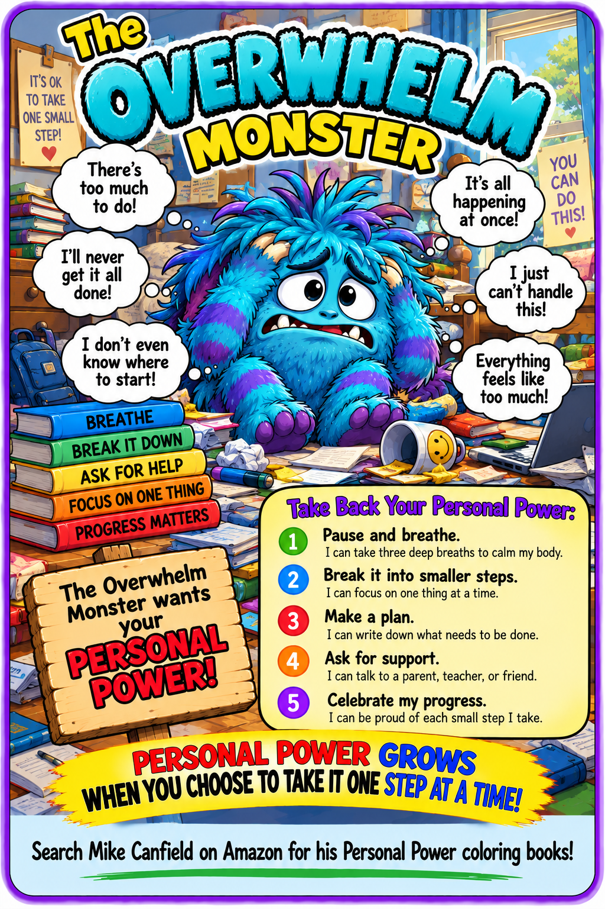
Download Overwhelm poster (PDF)Pause and breathe. Break things into smaller steps, focus on one thing at a time, and ask for support. Each small step is progress.
 Download Impatience poster (PDF)
Download Impatience poster (PDF)
Take a breath and slow down. Good things take time: practice taking turns, use a plan, and notice your progress as you keep trying.
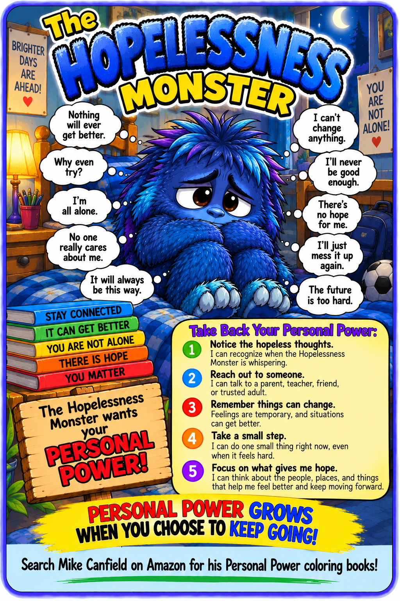
Download Hopelessness poster (PDF)You matter, and you don’t have to face hard feelings alone. Reach out to someone you trust and take one small step with their support.
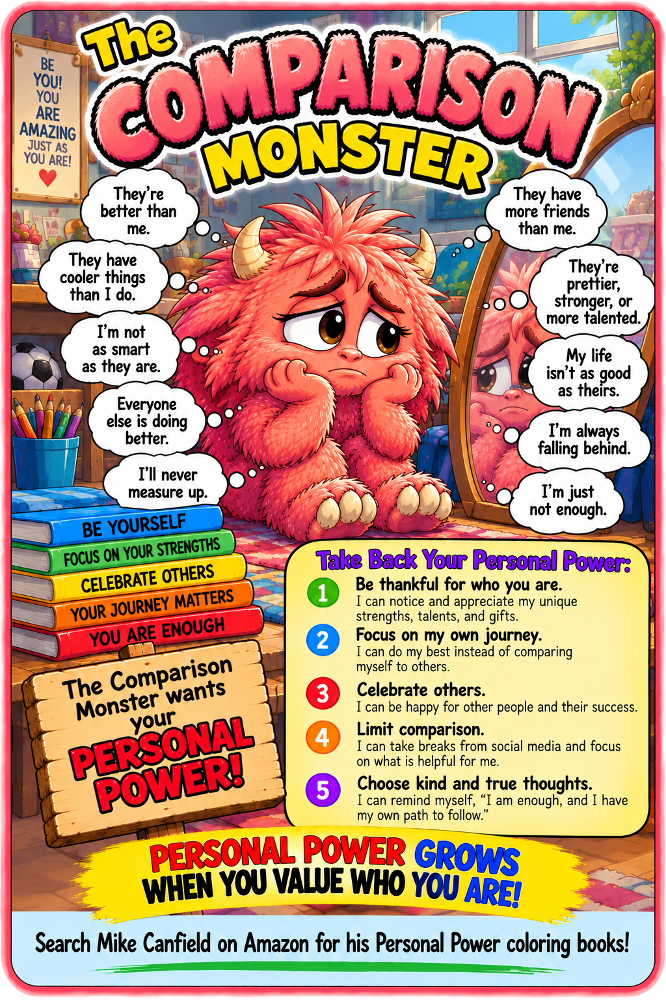
Download Comparison poster (PDF)Notice your own strengths and focus on your journey. Celebrate others while remembering that your gifts and progress matter, too.
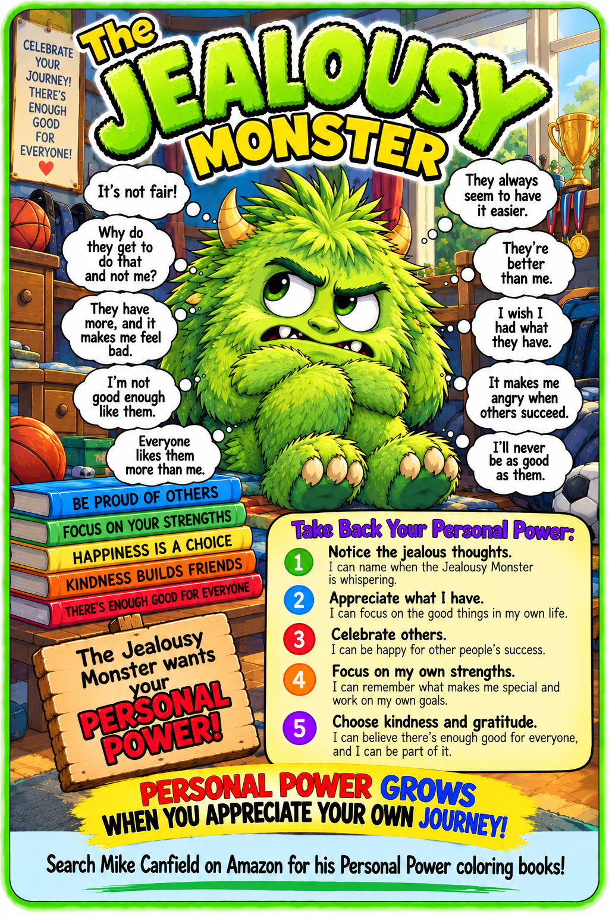
Download Jealousy poster (PDF)Notice the good in your own life and appreciate your strengths. Celebrate others and choose kindness as you work toward your own goals.
 Download Stubbornness poster (PDF)
Download Stubbornness poster (PDF)
Pause and listen. Stay open to new ideas, try a different way, and remember that there can be more than one good solution.
 Download Peer Pressure poster (PDF)
Download Peer Pressure poster (PDF)
Pause and think about what matters to you. It’s okay to say no and choose what feels safe and right. Real friends respect your choices.
 Download Excuse poster (PDF)
Download Excuse poster (PDF)
Be honest about what you can do, take responsibility for your part, and choose one small action. Following through builds trust and helps you grow.
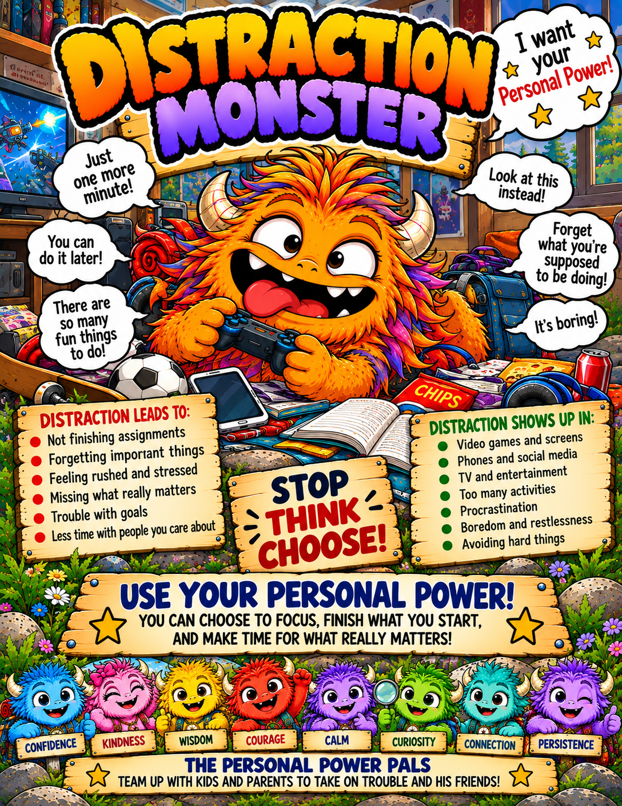
Download Distraction poster (PDF) ▶ Watch Distraction videoStop, think, and choose what matters most. Put distractions aside, focus on one small task, and celebrate finishing what you start. Make time for the people and goals you care about.
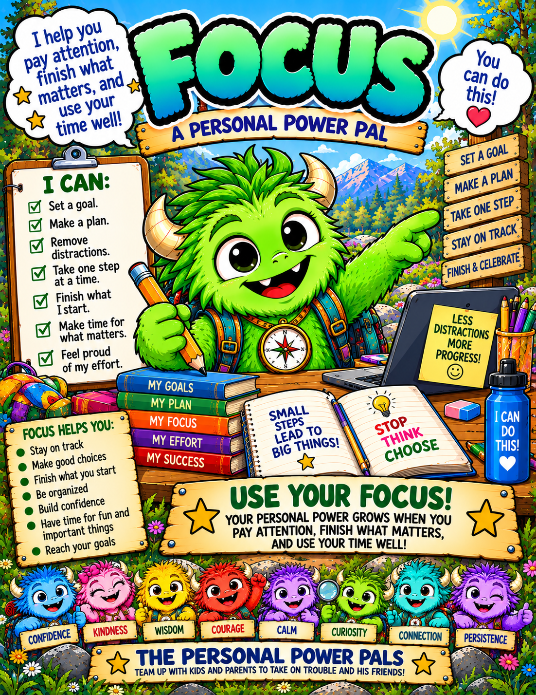
Download Focus poster (PDF)Set a goal, make a plan, and remove distractions. Take one step at a time, stay on track, and celebrate your effort. Your Personal Power grows when you make time for what matters.
Printable downloads are one-page PDFs sized for US Letter (8.5 × 11 inches), with margins to keep the full poster visible. For A4 or other paper sizes, choose “Fit to page” in your print settings.
You’re welcome to download and print these posters for use at home, in your classroom, or with the people you care for.
If a poster helps start a meaningful conversation, please consider a small donation to Family Success Northwest. Your support helps us bring encouraging resources to more children, families, and caregivers. Downloads are free, and donating is optional.
Donate to Family Success NorthwestPersonal Power grows when we help others use theirs.
Protective Power includes the people who stand beside us: family, teachers, coaches, friends, and trusted adults. We don’t have to face every challenge alone.